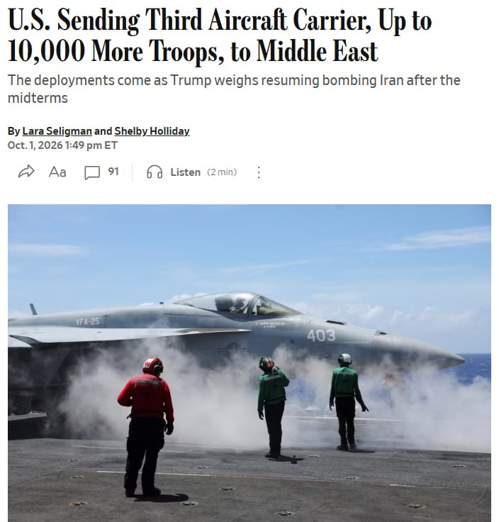

Топор Live
@c1754252633
Топор Live
@c1754252633
⚡️США перебрасывают на Ближний Восток третью авианосную группу, увеличивая численность войск в регионе на 9000–10000 человек, — The Wall Street Journal.

⚡️США перебрасывают на Ближний Восток третью авианосную группу, увеличивая численность войск в регионе на 9000–10000 человек, — The Wall Street Journal.
Техника, истребители и личный состав должны прибыть к концу ноября.
Трамп при этом говорил приближённым, что рассчитывает возобновить удары по Ирану именно в ноябре, уже после промежуточных выборов, пишет газета.
👉 Топор Live. Подписаться